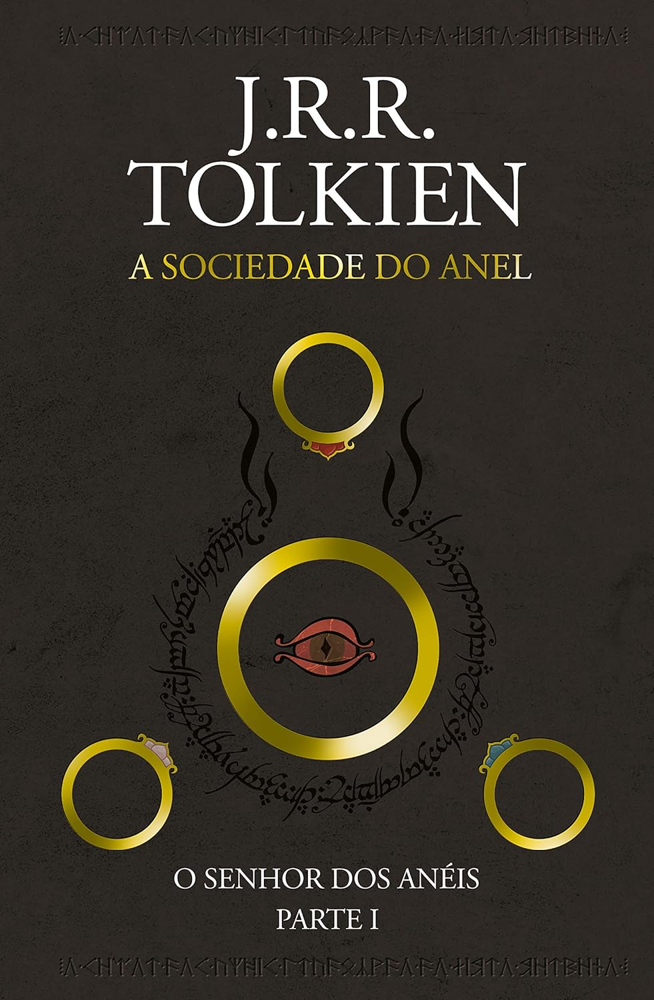
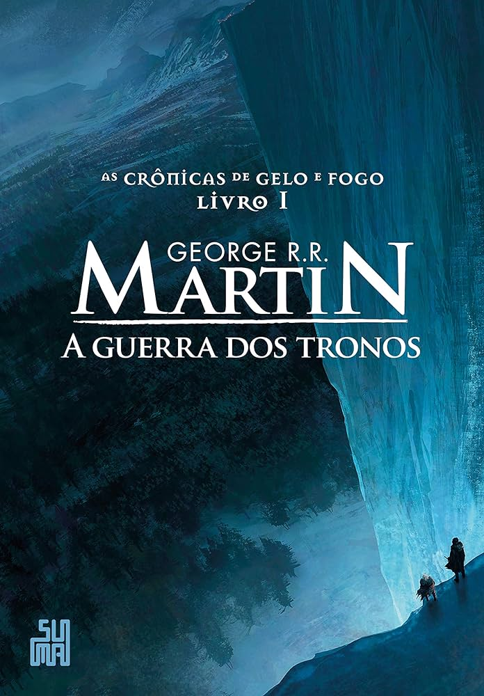
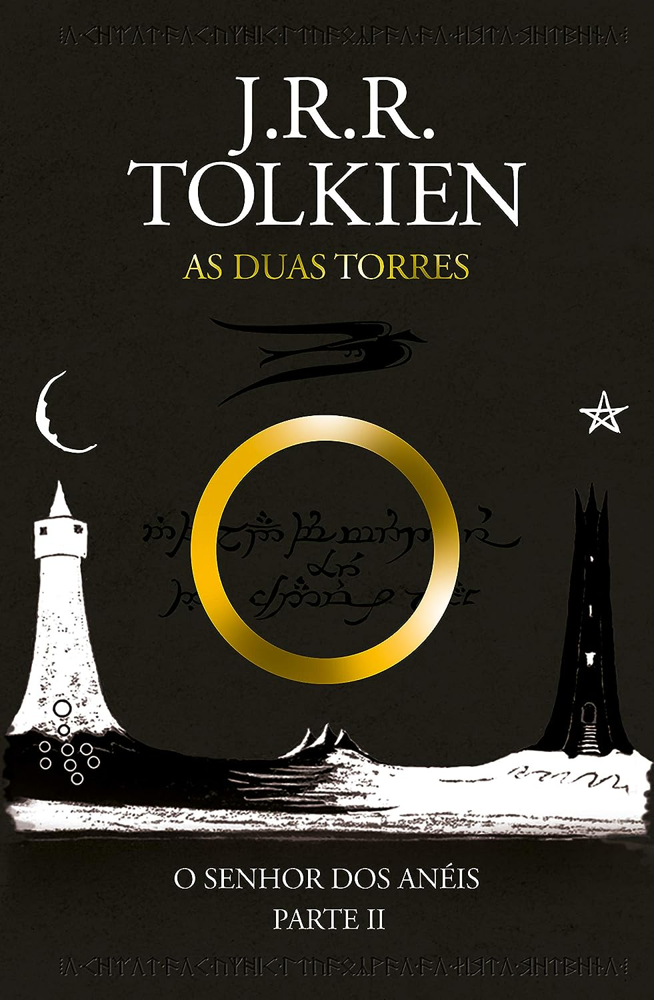
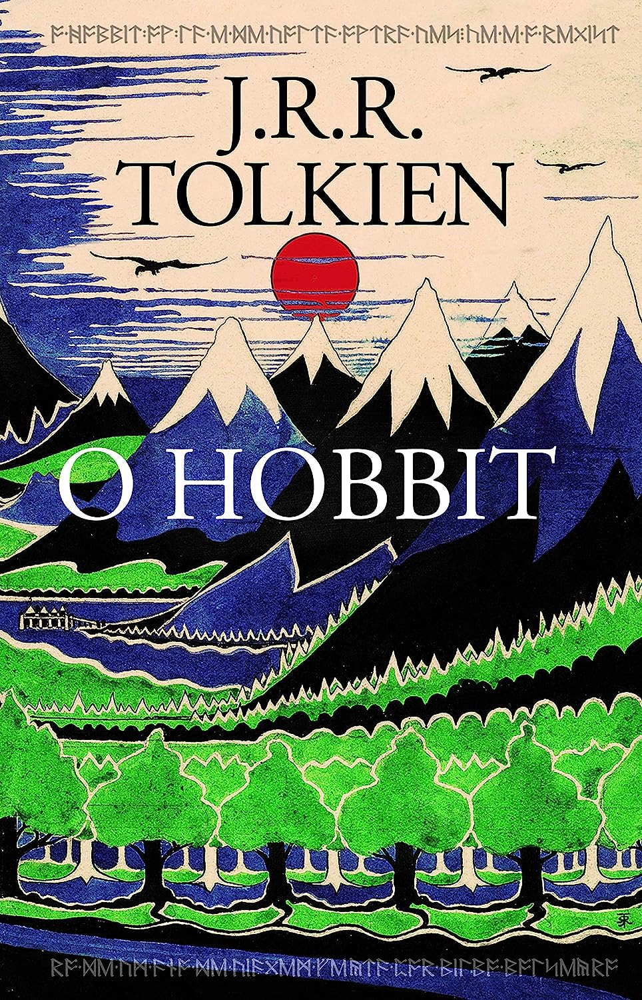

A sociedade do anel
"O Senhor dos Anéis: A Sociedade do Anel" é o primeiro livro da trilogia épica de fantasia escrita por J.R.R. Tolkien. Publicado originalmente em 1954, o livro apresenta uma narrativa envolvente que combina elementos de aventura, mitologia e drama em um mundo fictício chamado Terra-média.
A história começa quando um humilde hobbit chamado Frodo Bolseiro herda um anel mágico de seu tio, Bilbo Bolseiro. Este não é um anel comum; é o Um Anel, criado pelo sombrio Senhor do Escuro, Sauron, com o propósito de dominar toda a Terra-média. Consciente do perigo que o Um Anel representa, Frodo embarca em uma perigosa jornada para destruí-lo, acompanhado por um grupo diversificado de companheiros, incluindo outros hobbits, um mago, elfos, anões e homens.
A Sociedade do Anel é formada, composta por nove membros representando diferentes povos e habilidades, unidos em uma missão desesperada para levar o Um Anel até a Montanha da Perdição, onde ele foi forjado, e destruí-lo para sempre. Ao longo do caminho, enfrentam desafios épicos, perigos mortais e a crescente sombra de Sauron, enquanto o destino de toda a Terra-média pende na balança.
O livro é aclamado por sua rica imaginação, personagens memoráveis, linguagem elaborada e profundidade temática. Ele captura a imaginação dos leitores com sua narrativa envolvente e continua a ser uma das obras mais amadas e influentes da literatura de fantasia.

As cronicas de gelo e fogo
Crônicas de Gelo e Fogo: A Guerra dos Tronos" é o primeiro livro da aclamada série de fantasia escrita por George R.R. Martin. Publicado em 1996, este livro introduz os leitores ao vasto e intricado mundo de Westeros, onde as intrigas políticas, as rivalidades familiares e a ameaça iminente de uma guerra devastadora se entrelaçam em uma trama épica.
A história se desenrola em um cenário medieval fictício, onde várias casas nobres disputam o poder sobre os Sete Reinos de Westeros. No centro da trama estão os Stark de Winterfell, uma família nobre do Norte, liderada por Eddard Stark, o Guardião do Norte. Quando Eddard é convocado pelo Rei Robert Baratheon para servir como Mão do Rei na capital, Porto Real, ele se vê imerso em um intrincado jogo de poder e traição.
Enquanto isso, além da Muralha que separa o reino dos homens das terras selvagens ao norte, uma antiga ameaça começa a se manifestar. Os temidos Outros, criaturas sobrenaturais do gelo, começam a se movimentar novamente depois de milhares de anos de aparente inatividade, sugerindo que o inverno está chegando e trazendo consigo o perigo de uma guerra iminente.
"A Guerra dos Tronos" é um épico de fantasia repleto de personagens complexos, reviravoltas surpreendentes e um mundo ricamente detalhado. Ao mergulhar nas intrigas palacianas, nas batalhas épicas e nas traições devastadoras, os leitores são transportados para um universo único e envolvente, onde ninguém está a salvo e onde os laços de sangue podem ser tanto uma fonte de poder quanto de destruição.

As duas torres
As Duas Torres" é o segundo livro da trilogia épica "O Senhor dos Anéis" escrita por J.R.R. Tolkien. Publicado originalmente em 1954, o livro continua a jornada épica dos personagens introduzidos em "A Sociedade do Anel" enquanto eles enfrentam novos desafios e perigos em sua busca para destruir o Um Anel e derrotar o Senhor do Escuro, Sauron.
A história de "As Duas Torres" é dividida em duas partes principais:
As Duas Torres: Esta parte segue as aventuras de Aragorn, Legolas e Gimli enquanto eles rastreiam os orcs que sequestraram Merry e Pippin após a Batalha de Parth Galen. Enquanto isso, Merry e Pippin conseguem escapar de seus captores e encontram abrigo com os Ents, os antigos pastores das árvores, em Fangorn, onde testemunham a despertar de Fangorn, o Ent mais antigo e sábio.
O Cerco de Gondor: Esta parte segue Frodo e Sam em sua jornada solitária para Mordor, onde devem destruir o Um Anel. Eles são acompanhados pelo misterioso Gollum, que deseja o Anel para si mesmo. Enquanto isso, em Gondor, a nação está sob ameaça do exército de Sauron e do traidor Denethor, o regente louco de Gondor. Aragorn, Legolas, Gimli e Gandalf se unem aos guerreiros de Gondor para defender a cidade de Minas Tirith do ataque iminente.
"As Duas Torres" é uma continuação emocionante da história iniciada em "A Sociedade do Anel", repleta de ação, intriga política, batalhas épicas e o crescimento dos personagens enquanto enfrentam desafios cada vez maiores em sua jornada para salvar a Terra-média da escuridão que se aproxima.

O hobbit
O Hobbit" é um livro de fantasia escrito pelo renomado autor J.R.R. Tolkien. Publicado originalmente em 1937, é um prelúdio à sua famosa trilogia "O Senhor dos Anéis" e apresenta aos leitores o mundo mágico e encantador da Terra-média.
A história começa no confortável e pacífico Condado, onde vive Bilbo Bolseiro, um hobbit relutante em aventuras e mais interessado em sua rotina tranquila. Tudo muda quando o mago Gandalf e um grupo de treze anões liderados por Thorin Escudo-de-Carvalho aparecem em sua porta, procurando um ladrão habilidoso para ajudá-los em sua busca para recuperar o reino perdido dos anões, Erebor, do dragão Smaug.
Após alguma hesitação, Bilbo se junta à expedição como o ladrão contratado, e juntos eles enfrentam uma série de desafios perigosos e emocionantes, incluindo encontros com trolls, goblins, elfos e aranhas gigantes. No entanto, o maior desafio de todos é confrontar o terrível dragão Smaug, que há muito tempo tomou posse de Erebor e guardou seu tesouro.
Durante a jornada, Bilbo encontra o anel mágico que se tornaria uma peça central na trilogia "O Senhor dos Anéis". Ele também descobre sua própria coragem e habilidade, superando suas próprias limitações e provando ser um herói inesperado.
"O Hobbit" é uma história de aventura clássica que cativa leitores de todas as idades com seu charme, imaginação vívida e mensagem duradoura sobre coragem, amizade e o poder da jornada. É uma introdução perfeita ao vasto e fascinante universo criado por Tolkien em sua obra mais conhecida, "O Senhor dos Anéis".